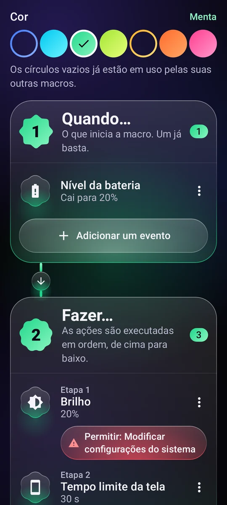
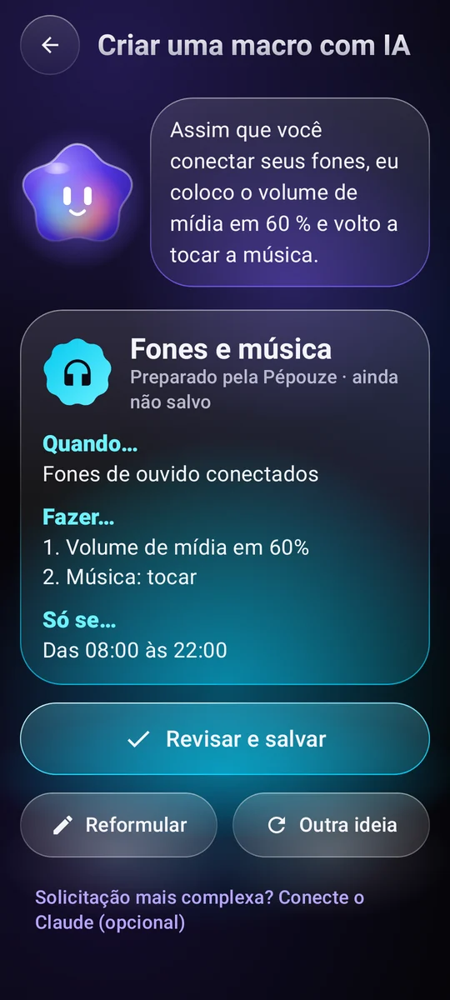
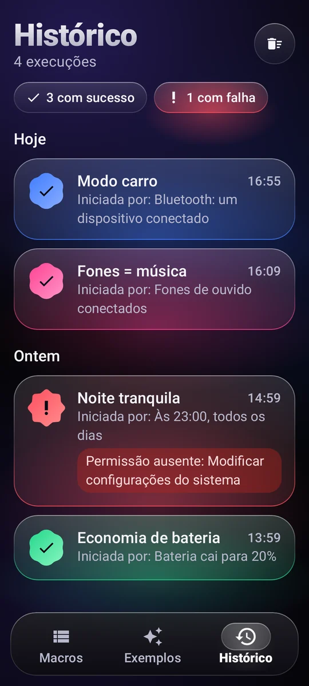

O que inicia a macro
Um horário e dias da semana, o Wi-Fi, o Bluetooth, os fones de ouvido, o carregador, o nível da bateria, a tela que acende, um app que abre…
11 gatilhosAutomação para Android
Escreva uma regra simples, “Quando… Fazer…”, e seu celular cuida de tudo na hora certa, sozinho.
Como funciona
Cada macro cabe em uma frase. Você monta em três blocos, sem programar nada.
Um horário e dias da semana, o Wi-Fi, o Bluetooth, os fones de ouvido, o carregador, o nível da bateria, a tela que acende, um app que abre…
11 gatilhosVolume, toque, Não perturbe, brilho, lanterna, música, alarme, timer, notificação, leitura de um texto em voz alta, abrir um app ou um link, tocar em um texto na tela…
29 ações para combinarUm intervalo de horário, dias da semana, um nível de bateria, o celular carregando.

Exemplos
Copie um exemplo, ajuste do seu jeito e pronto. Aqui vão alguns.
Assim que o Bluetooth do carro conecta, o volume sobe e a música volta a tocar.
Às 23h, o Não perturbe é ativado, o brilho vai ao mínimo e a música para.
Abaixo de 20% de bateria, a tela diminui o brilho e apaga mais rápido.
Quando você conecta os fones, a música começa em um volume suave.
De manhã, ao desconectar o carregador, o celular fala a hora e o nível da bateria.
De domingo a quinta, às 22h30, um lembrete gentil para largar o celular, e a tela escurece.

Pépouze, sua assistente
Descreva o que você quer em uma frase. A Pépouze prepara a macro, você confere e depois salva.
Você“Quando eu conectar meus fones, coloque a música em 60%”
Compartilhar e executar
Troque ideias com a comunidade e execute suas macros sem nem abrir o app.
Uma biblioteca de macros compartilhadas pelos usuários. Copie a que você curtir, publique as suas. Ver a comunidade
Mostre para um amigo, coloque em um vídeo: qualquer câmera abre, e a Pépouze importa.
Um widget na tela inicial, um bloco nas configurações rápidas ou um atalho: a macro é executada na hora.
A Pépouze fala 13 idiomas e entende seus pedidos direto no celular.
Você no controle
Cada execução fica registrada, com sucesso ou não, junto com o que a disparou.
Uma permissão só é pedida quando uma macro precisa dela, sempre com explicação.
No Google Drive ou no celular, sem conta. Ou on-line, com uma conta.
Suas macros ficam no seu celular. Sem medição de audiência, nenhum dado vendido.

Preço
Sem anúncios, sem assinatura, sem pegadinha: o Pépouze é um projeto independente.
€ 0
Perguntas
Só para o que você adiciona às suas macros: tocar em um texto na tela, apertar Voltar ou Início, bloquear a tela, fazer uma captura de tela, saber qual app está abrindo.
O texto da tela só é lido para encontrar aquele que deve ser tocado, e nada sai do celular. A Pépouze age apenas segundo as regras que você escreveu. O serviço só é ativado com a sua permissão, depois de uma explicação específica, e você pode desligá-lo a qualquer momento.
Não. A conta serve só para fazer backup on-line das suas macros. Você também pode salvá-las em um arquivo, no Google Drive ou no celular, sem conta nenhuma.
Sim, a maioria: a Pépouze escuta os eventos em segundo plano. Para que o Android não a coloque em suspensão, escolha “Bateria: sem restrições” na página do app nas configurações do Android. As ações que tocam na tela precisam do celular desbloqueado.
Não. A ação “Preparar um SMS” abre seu app de mensagens com o número e o texto prontos: é você quem toca em Enviar.
No app: Minha conta → Excluir minha conta. Sem o app, siga a página de exclusão da conta.
Grátis no Android, sem anúncios.
O Pépouze chega em breve. Teste antes de todo mundo: escreva para nós e enviamos o convite.